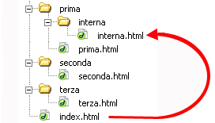

il valore dell'attributo href (Hypertext REFerence) può essere un url dal web, oppure un collegamento dal locale
come prima cosa specifichiamo la differenza tra URL e link.
Il link è un collegamento a un elemento, che può essere sul web (quindi come una pagina web in formato html) oppure
può essere sul server locale. Se il link riporta a un elemento sul web, allora è un percorso sul web detto URL.
Nel caso del link che abbiamo messo sopra "link senza bottone (collegato ad un URL)" il link era un URL. Gli URL
sono usati principalmente per collegare pagine esterne al progetto web creato.
Ma se si deve collegare una pagina dello stesso progetto, allora si collega "in locale".
Per collegare un elemento in locale si usano i percorsi relativi o assoluti, che servono a muoverci tra le cartelle.
I percorsi assoluti partono dalla radice del computer o del server per arrivare ad ogni file. Sono scomodi da usare per
i file locali perché con il movimento di una minima cartella, il percorso si perde.
Vengono usati principalmente negli URL e non molto in locale
I percorsi relativi fanno riferimento alla directory (cartella) in cui si trova il file da cui si parte.
Ci sono 3 casi per i percorsi relativi:
il caso in cui i file sono nella stessa cartella. La sintassi è semplice: si deve solo inserire il nome del file
href="filedellastessacartella.html"
il caso in cui i file partono da una directory superiore fino ad arrivare a quella inferiore
dobbiamo usare la sintassi
href="prima sottocartella/seconda sottocartella/altre sottocartelle/file da collegare.html"

in quest'esempio il valore di href per collegare il file interna.html sarebbe href="prima/interna/interna.html"
il caso in cui i file partono da una directory inferiore fino ad arrivare a quella superiore
in questo caso la sintassi è tot 2 punti quanti sono i livelli da "scalare", separati da /, e poi il file da collegare:
href="../file da collegare.html"
in questo esempio salgo di 1 livello per collegare il file
nell'esempio della foto si deve salire di 2 livelli => href="../../index.html"
Quando si ha un hosting web disponibile (il servizio che permette di mettere online un sito web), i
vari file html si inseriscono in varie cartelle o nella stessa cartella di un server a seconda di
come sono indirizzati i link.
I nomi dei file html sono personalizzabili, ma di solito la homepage ha sempre il nome di index.html
esempio link al file della homepage
Il link al file in questo caso è un percorso assoluto, che quasi sicuramente non andrà, perché sarà
cambiata la posizione del file.
Questo é un esempio di inserimento testo! Inoltre ci sono anche vari attributi
inoltre esiste anche un tag per gli input in multiriga, detto textarea, con il quale possiamo anche regolare la grandezza
dell'inserimento testo dalla pagina web.
Abbiamo gli attributi:
rows per decidere quante righe debba essere alto (almeno inizialmente, prima che sia modificato nella pagina)
le righe di default sono 2
cols per decidere quante colonne debba essere lungo (almeno inizialmente, prima che sia modificato nella pagina)
le colonne di default sono 20
name per identificare un elemento HTML all'interno di un modulo o di una richiesta HTTP.
Questo attributo consente di inviare dati al server in modo strutturato e prevedibile. (lo vedremo molto in futuro)
il tag textarea ha come suo valore interno al tag di apertura e di chiusura il valore che viene scritto di default
nell'inserimento testo. Può essere modificato a piacere, a meno che non venga messo l'attributo readonly, che rende impossibile
la modifica del testo.
per indicare che un testo nel nostro file HTML è un indicazione di data o ora si utilizza il tag time (non cambia la forma della parola)
Rapporto missione
invece per indicare un indirizzo stradale si usa il tag address, che rende il testo in corsivo e manda a capo (in inglese italic)
il mio indirizzo di casa è: via fratelli Capocchia n 104
per indicare un abbreviazione nel codice HTML si utilizza il tag abbr. L'attributo title indica il nome completo della parola
SPQR
scrivere codice come testo in un file HTML
nel caso dobbiamo far vedere nella pagina web più spazi (il browser interpreta solo il primo spazio, e quelli
successivi li ignora) oppure proprio la scrittura del codice, ma viene interpretato dal browser, come
parte del codice stesso, possiamo usare vari metodi:
scrivere i caratteri speciali in codice HTML: sostituire i caratteri speciali che vengono interpretati come codice,
in altri modi, seguendo queste traduzioni (fai finta che i caratteri non sono divisi da spazi)
lo spazio => & n b s p ;
" => & q u o t ;
< => & l t ;
> => & g t ;
- => & n d a s h ;
ad esempio per scrivere il codice di un paragrafo facciamo così:
<p>Paragrafo a caso</p>
Il codice lo metto in corsivo per distinguerlo meglio.
scrivere il codice all'interno del tag <textarea>. É l'opzione più comoda
usiamo inoltre 4 attributi associati al textarea
name = definiamo il nome della’aerea di testo.
readonly = con valore readonly gli abbiamo detto che deve essere di sola lettura, se lo omettiamo diventerà un aria di testo con possibilità di scrittura.
cols = con valore numerico di 50 gli stiamo specificando la larghezza visibile dell’area di testo.
rows = con valore numerico di 10 gli specifichiamo il numero visibile di linee dell’area di testo.
tag semantici
la maggior parte dei file semantici non modificano l'aspetto della pagina, ma possono essere utili per le CSS rule
il cuore ha le sue ragioni che la ragione non conosce
senz e te nu post stà, pcchè tu m'appartiennnnn, pcchè m piac tuuu
tras indo local, tutt Gucci e Ferragam, sold e fierr inde man
me pcciat o cor, ma poi t na vai e nu sacc ancor
sheeeeeeeeeeeeee
sheeeeeeeeeeeeee
me pcciat o cor, ma poi t na vai e nu sacc ancor
youporn
ACCESSIBILITÀ HTML
Per rendere accessibile le pagine web al maggior numero di utenti, dobbiamo ricordarci tecnologie di assistenza.
Queste tecnologie sono usate da utenti con diversi dispositivi o con una connessione lenta, oppure con disabilità.
Alcune di queste tecnologie di assistenza sono lettori di schermo (per i ciechi), dispositivi di zoom, ecc...
Un modo per aiutare queste tecnologie, e quindi questi utenti, è usare un codice semantico HTML: al posto di usare
i generici div e span, che non hanno alcun contesto, possiamo usare i tag semantici, come "h1" "ul" o "p".
Infatti tramite questi tag semantici il lettore di schermo riesce a interpretare meglio gli elementi HTML.
Ecco alcune regole che si dovrebbero rispettare per una migliore accessibilità:
ci deve essere un ordine tra i titoli, dai più grandi ai più piccoli
ci deve essere un unico titolo "h1"
si deve usare il giusto tag per ogni scopo: il tag "a" per reindirizzare altre pagine, il tag "button" per compiere azioni
Altro modo per migliorare l'accessibilità è il WAI-ARIA.
Il WAI-ARIA (Web Accessibility Initiative - Accessible Rich Internet Applications) è un insieme di specifiche
sviluppate dal W3C (World Wide Web Consortium) per migliorare l'accessibilità dei contenuti Web per le persone
con disabilità, in particolare per quelle che utilizzano tecnologie assistive come screen reader, tastiere, ecc.
Infatti nei casi in cui i tag semantici non sono abbastanza, possiamo usare diversi attributi del WAI-ARIA.
Il più importante di questi è l'attributo role:
L'attributo role viene utilizzato per fornire informazioni aggiuntive sull'identità o sulla funzione di un
elemento HTML. In altre parole, l'attributo role viene utilizzato per specificare il ruolo semantico di un
elemento all'interno della pagina.
L'attributo role può essere utilizzato su qualsiasi elemento HTML, ma è particolarmente utile per gli elementi
non semantici, come ad esempio un div o un span.
Ecco un esempio di come utilizzare l'attributo role su un elemento HTML:
Click me
In questo esempio, l'attributo role viene utilizzato per indicare che l'elemento div ha il ruolo di pulsante.
L'attributo aria-label viene utilizzato per fornire una descrizione testuale dell'elemento per gli utenti che
utilizzano screen reader. L'attributo role può essere utilizzato in combinazione con altri attributi, come ad
esempio aria-label, aria-labelledby, aria-describedby, aria-owns, aria-haspopup, aria-expanded, aria-selected,
aria-checked, e molti altri ancora.
Facciamo alcuni esempi di role:
role="banner" => fa interpretare un elemento come l'intestazione della pagina.
Per far considerare al lettore di schermo vari elementi come un unico elemento, dobbiamo usare role al container di questi elementi,
dando il valore del tag.
<div role="img">
<img src="image1.png">
<img src="image2.png">
</div>
role="comment" => fa interpretare un elemento come una reazione a un certo contenuto.
role="contentinfo" => indica l'elemento come footer, ossia informazione del contenuto come il copyright
role="alert" => indica l'elemento come un avviso per eventi o cambiamenti nella pagina
Sui tag semantici non si deve usare l'attributo role, siccome è inutile e superfluo
Ricorda, tra un tag semantico e un attributo role, è meglio usare il tag semantico, siccome è più accessibile.
Altro attributo ARIA utile è aria-hidden.
aria-hidden: nasconde dal lettore di schermo elementi visivi superflui (non si deve inserire valore dell'attributo)
questo attributo non deve essere usato su elementi interattivi, come bottoni o link, perché non rende possibile per il lettore di schermo interagire con loro